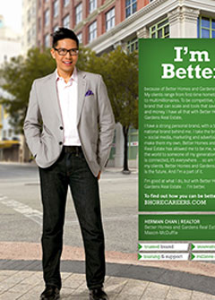

 In 1981, seven engineers started Infosys Limited with just US$250. From the beginning, the company was founded on the principle of building and implementing great ideas that drive progress for clients and enhance lives through enterprise solutions. For over three decades, we have been a company focused on bringing to life great ideas and enterprise solutions that drive progress for our clients. We recognize the importance of nurturing relationships that reflect our culture of unwavering ethics and mutual respect. It’ll come as no surprise, then, that 96.6 percent (as of March 31, 2015) of our revenues come from existing clients. Infosys has a growing global presence with more than 176,000+ employees. Globally, we have 85 sales and marketing offices and 100 development centers as at March 31, 2015. At Infosys, we believe our responsibilities extend beyond business. That is why we established the Infosys Foundation – to provide assistance to some of the more socially and economically depressed sectors of the communities in which we work. And that is why we behave ethically and honestly in all our interactions – with our clients, our partners and our employees.

About Us
Waistline Saving Time Reg.U.S. Pat. TM. OFF